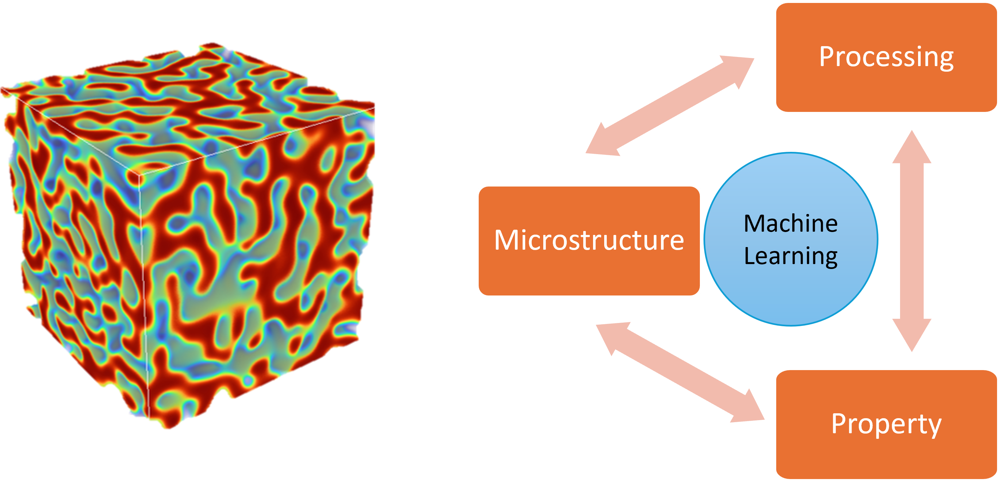

Our lab drives materials design for energy materials and structural alloys by combining multi-physics microstructure simulations with machine learning and data-driven tools to unravel the complex processing–microstructure–property relationships